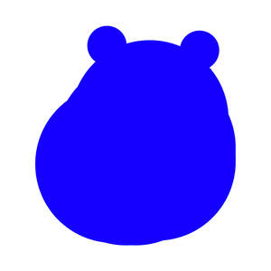

Trade Mark Journal No.2025/050 12 December 2025
UK00004302919 30 November 2025 (9,18,25)

- Class 9
- Electronic control circuits for electronic musical instruments; Electronic semi-conductors; Electronic pagers; Electronic circuits; Electronic components; Electronic sensors; Databases (electronic); Electronic databases; Electronic communications instruments; Digital electronic controllers; Electronic scoreboards; Electronic doorbells; Electronic scanners; Electronic digital signboards; Electric and electronic components; Electronic game software for handheld electronic devices; Electronic telecommunications instruments; Electronic metronomes; Electronic oscillators; Electronic publications; Electronic calculators; Electronic relays; Electronic digitisers; Electronic notepads; Circuits [electric or electronic]; Electronic doorlocks; Electronic magazines; Electronic taximeters; Electronic notebooks; Electronic styluses; Electronic spell-checkers; Transistors [electronic]; Electronic communications apparatus; Audio electronic apparatus; Electronic resonators; Electrical and electronic components; Electronic cables; Electronic diaries; Diaries (Electronic -); Portable digital electronic scales; Electronic chips; Electronic controllers; Hand-held electronic dictionaries; Wearable digital electronic communication devices; Electronic blackboards; Electronic amplifiers; Electronic connectors; Padlocks, electronic; Electronic displays; Electronic pens; Electronic tablets; Electronic buzzers; Electronic transformers; Waveguides (Electronic -); Optical electronic components; Printed electronic circuits; Electronic dynamometers; Electronic signboards; Electronic telecommunications apparatus; Electronic tuners; Electronic inductors; Electronic decoders; Electronic photometers; Electronic dictionaries; Directories [electric or electronic]; Electronic coils; Electronic locks; Locks, electronic; Electronic imaging devices; Electronic control instruments; Electronic balances; Electronic plotters; Electronic components for computers; Publications in electronic form; Electronic scales; Electronic communication equipment and instruments; Tactile screens [electronic]; Interactive electronic publications; Electronic components used in apparatus; Electronic regulators; Electronic mail terminals; Computer documentation in electronic form; Electronic paper (display devices); Electronic paper being display devices; Integrated electronic circuits; Electronic integrated circuits; Electronic communication installations; Electronic surveillance apparatus; Electric and electronic security apparatus and instruments; Electronic agendas; Agendas (Electronic -); Electronic signs; Hand-held electronic scales; Electrical and electronic instruments for the transmission of data; Software related to handheld digital electronic devices; Electrical and electronic instruments for processing data; Electronic meters; Electronic personal alarm devices; Information storage devices [electric or electronic]; Electronic payment terminals; Electronic tags; Electronic organizers; Electrical and electronic connectors; Electronic and electrical connectors.
- Class 18
- Bags; Tote bags; Luggage bags; Duffle bags; Duffel bags; Carry-on bags; Toiletry bags; Bags for clothes; Drawstring bags; Carry-all bags; Belt bags and hip bags; Nose bags [feed bags]; Bags (Nose -) [feed bags]; Carrying bags; Grocery tote bags; Cross-body bags; Bags for umbrellas; Diaper bags; Luggage, bags, wallets and other carriers; Crossbody bags; Cloth bags; Bucket bags; Leather bags; Sling bags; Belt bags; Duffel bags for travel; Clutch bags; Shoe bags; Wheeled bags; Kit bags; Messenger bags; Souvenir bags; Travel bags; Bags for travel; Leather bags and wallets; Garment bags; Shoulder bags; Toilet bags; Make-up bags; Cosmetic bags; Waterproof bags; Reusable shopping bags; Makeup bags; Umbrella bags; Towelling bags; Camping bags; Courier bags; Bags for campers; Roll bags; Bags for carrying pets; Knitted bags; Gym bags; Bags [envelopes, pouches] of leather, for packaging; Bags [envelopes, pouches] of leather for packaging; Bags [envelopes, pouches] for packaging of leather; Attaché bags; Hand bags; Travelling bags; Cabin bags; Flight bags; Traveling bags; Beach bags; Overnight bags; Bags for climbers; Mesh shopping bags; Mesh bags for shopping; Boot bags; Leather shopping bags; Canvas shopping bags; Bum bags; Hiking bags; Knitting bags; Frames for bags [structural parts of bags]; Roller bags; Nose bags; Wash bags for carrying toiletries; Suit bags; Hunting bags; Baby carrying bags; Gladstone bags; Waist bags; Feed bags.
- Class 25
- Clothing; Knitwear [clothing]; Jackets [clothing]; Ready-to-wear clothing; Woolen clothing; Furs [clothing]; Garments for protecting clothing; Layettes [clothing]; Clothing layettes; Linen clothing; Headbands [clothing]; Headbands for clothing; Gloves [clothing]; Gloves as clothing; Clothes; Aprons [clothing]; Maternity clothing; Kerchiefs [clothing]; Jerseys [clothing]; Denims [clothing]; Shorts [clothing]; Cashmere clothing; Capes (clothing); Oilskins [clothing]; Gabardines [clothing]; Leather clothing; Clothing of leather; Leather (Clothing of -); Silk clothing; Parts of clothing, footwear and headgear; Collars [clothing]; Veils [clothing]; Knitted clothing; Windproof clothing; Hoods [clothing]; Embroidered clothing; Corsets [clothing, foundation garments]; Wristbands [clothing]; Belts [clothing]; Belts for clothing; Bandeaux [clothing]; Rainproof clothing; Waterproof clothing; Casual clothing; Visors [clothing]; Jackets being sports clothing; Jackets (Stuff -) [clothing]; Stuff jackets [clothing]; Playsuits [clothing]; Bottoms [clothing]; Clothing for leisure wear; Ready-made clothing; Latex clothing; Trunks being clothing; Infant clothing; Woven clothing; Drawers [clothing]; Leisure clothing; Drawers as clothing; Clothing for sports; Sports clothing; Athletic clothing; Ties [clothing]; Clothing for children; Muffs [clothing]; Bodies [clothing]; Clothing for babies; Clothing for infants; Tops [clothing]; Weatherproof clothing; Clothing for cycling; Pockets for clothing; Fabric belts [clothing]; Water-resistant clothing; Triathlon clothing; Handwarmers [clothing]; Clothing for skiing; Beach clothing; Thermal clothing; Chaps (clothing); Cowls [clothing]; Men's clothing; Fishing clothing; Braces for clothing; Mitts [clothing]; Dance clothing.
Bipasha Elizabeth Ling